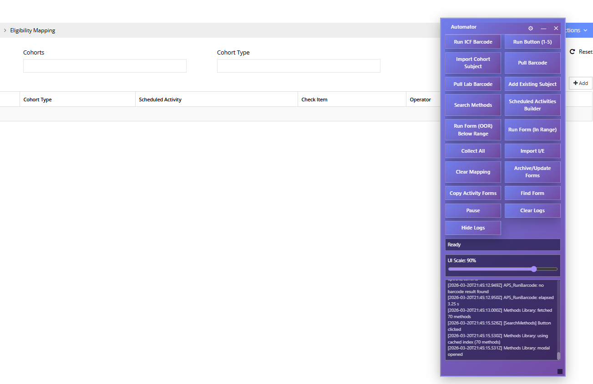
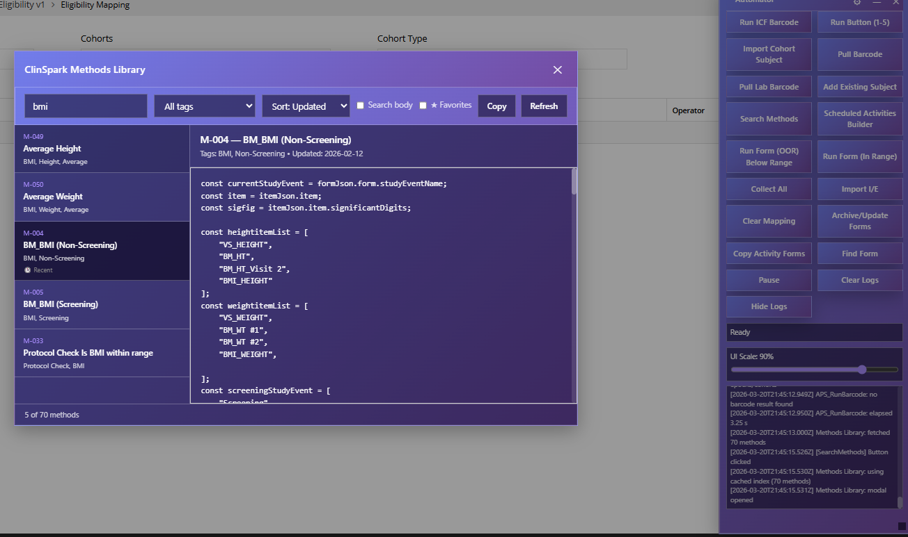

Tampermonkey Automator
A collection of Tampermonkey userscripts that automate repetitive data-entry tasks on a clinical trial management platform. The scripts handle multi-step form workflows, barcode scanning integration, batch processing of activity plans, and calculated field automation — turning hours of manual clicking into one-button operations.
The Problem
Clinical trial platforms require meticulous data entry for every subject visit: vital signs, lab results, eligibility checks, dosing records, and more. Each activity plan can involve dozens of form fields across multiple pages, and a single study day might require processing 20–50 subjects.
- Staff spent 3–5 hours daily on repetitive click-through workflows.
- Manual data entry across multi-page forms introduced transcription errors.
- Calculated fields (BMI, QTcF, blood pressure averages) had to be computed and entered by hand.
- Barcode-based sample tracking required switching between the platform and external systems.
- No built-in batch processing — each subject had to be handled one at a time.
Solution Overview
Core Automation Engine
- Floating control panel with start/pause/stop controls
- State machine persisted across page reloads via localStorage
- Configurable delays between actions for platform stability
- Activity log panel showing real-time progress and errors
- Draggable, collapsible UI with scalable dimensions
Form Automation
- Automatic field population from collected data
- Multi-step navigation: open form, fill fields, save, return
- Handles dynamic form elements loaded via AJAX
- Calculated fields: averages, medians, differences, BMI, QTcF
- Protocol-specific edit checks and validation triggers
Barcode Integration
- Subject identification via barcode scan input
- Automatic subject lookup and context switching
- Sample tracking with accession number generation
- Informed consent barcode verification workflow
Method Library
- 65+ documented calculation methods for clinical data
- Methods for vitals, ECG, lab panels, and dosing checks
- Reusable across different study protocols
- Markdown documentation for each method's logic
Tech Stack
JavaScript (ES5/ES6)
Tampermonkey
DOM Manipulation
localStorage
MutationObserver
GM_* APIs
Screenshots



Challenges & Solutions
- Page reload persistence: The clinical platform uses full-page navigation for many actions. I built a localStorage-based state machine that survives reloads and resumes automation at the correct step.
- Dynamic DOM elements: Forms are loaded asynchronously via AJAX. The scripts use MutationObserver patterns and configurable retry delays to wait for elements before interacting.
- Platform updates: The target platform updates its UI periodically. Using semantic selectors (labels, data attributes) rather than fragile CSS class paths improved resilience.
- Error recovery: Network timeouts and unexpected modal dialogs required a pause-and-retry mechanism with clear user feedback through the log panel.
Outcomes & Impact
- Reduced daily data-entry time by approximately 60–70% for routine workflows.
- Eliminated transcription errors in calculated fields (BMI, blood pressure averages, QTcF).
- 65+ reusable calculation methods documented in Markdown for team reference.
- Scripts are self-updating via raw GitHub URLs, keeping all users on the latest version.
- Adopted by multiple team members across different study protocols.
Lessons Learned
- Browser automation at the DOM level requires defensive coding at every step — never assume an element exists or is in the expected state.
- Clear logging is essential: when processing 50 subjects in sequence, users need to see exactly where things stand and what (if anything) failed.
- Documenting each calculation method in plain language (not just code) made it far easier for non-developers to verify correctness.
Future Improvements
- Migration to a browser extension for better lifecycle management and permissions.
- Configuration UI for per-study method selection instead of code-level customization.
- Export of automation logs to CSV for audit trail documentation.
- Dry-run mode that previews all actions without executing them.